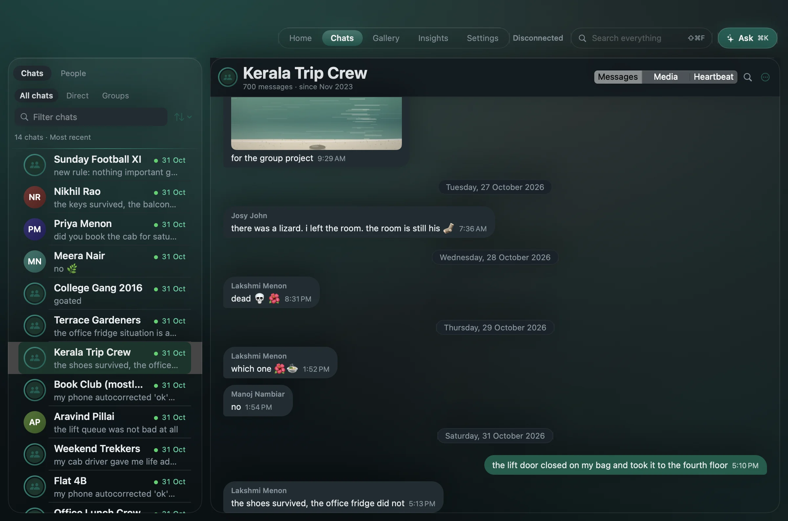
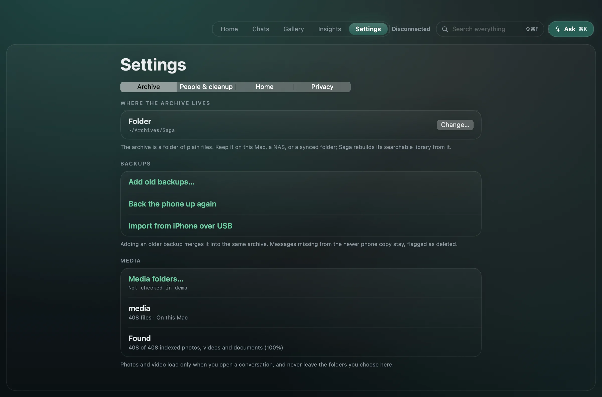
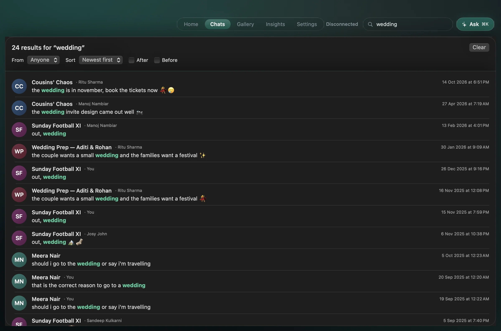
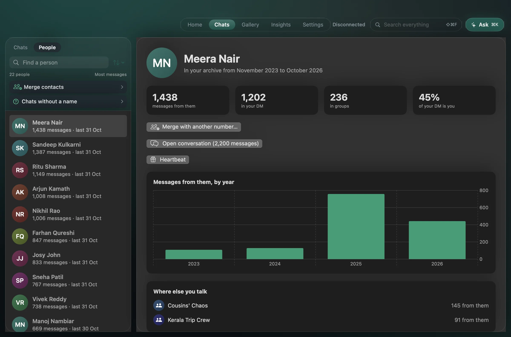
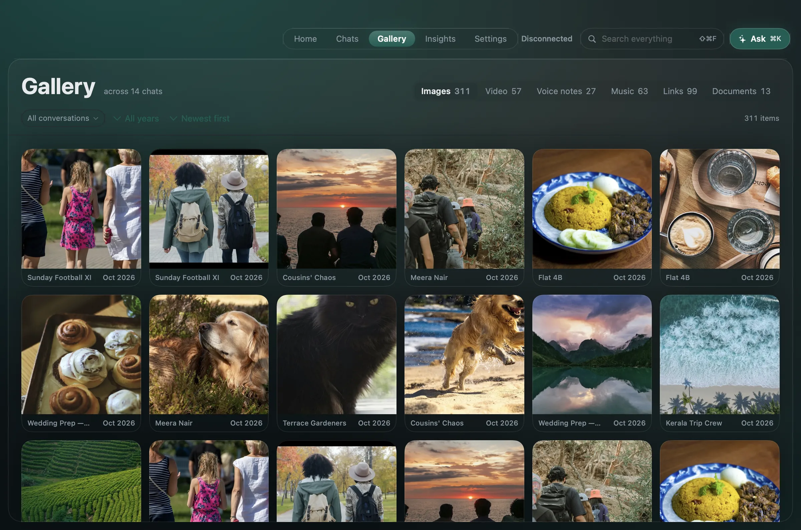
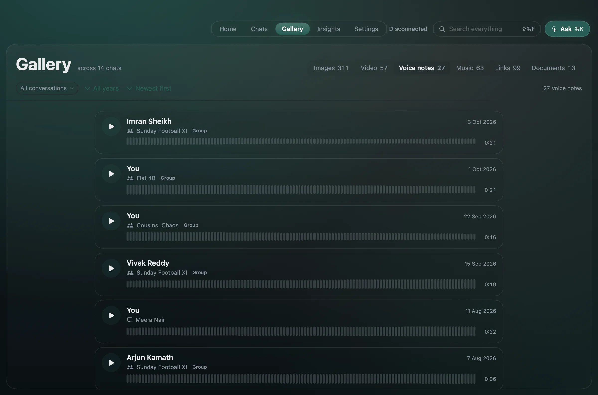
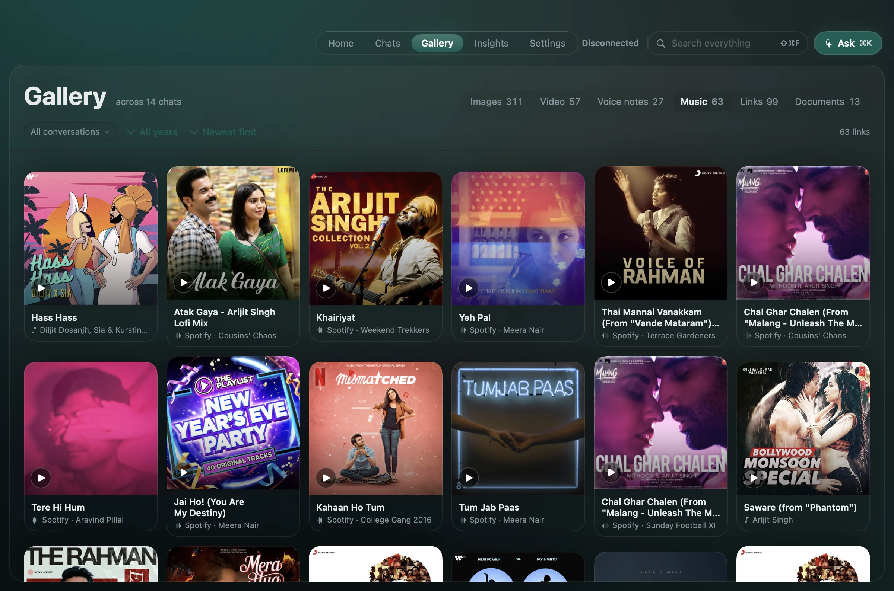
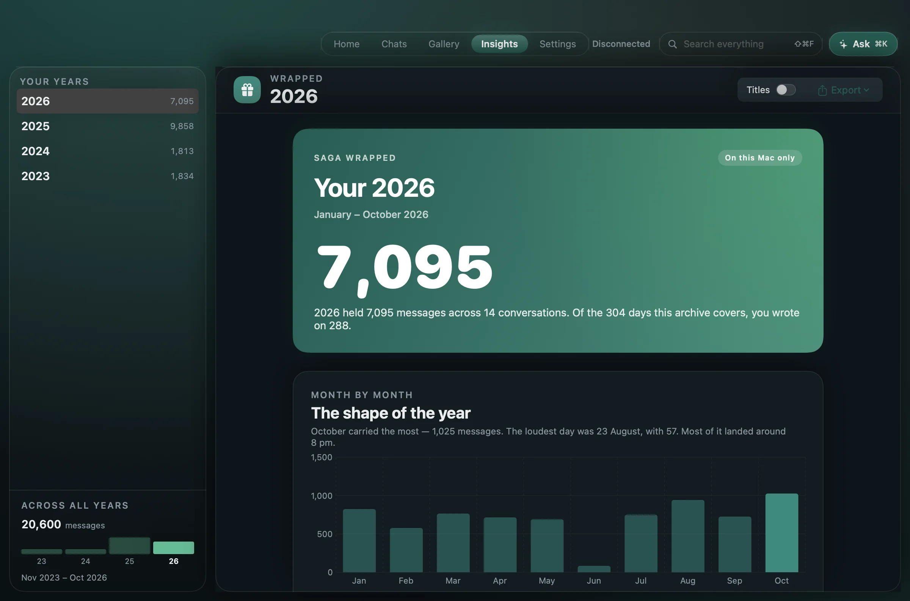

What Saga does with your backups.

Import over USB or from a file
Connect an Android phone with a cable, or open a backup file you already keep. You supply the 64-digit key and Saga holds it in the macOS Keychain. Adding older backups to the same archive fills in the years a newer one dropped.

Find the message, not just the chat
Search every message by the words people actually used, then open it in context with the conversation around it. Inside a conversation ⌘F finds within that chat and shows the match count, with next and previous; ⇧⌘F searches everything. Results are keyword matches, so search always works — no AI model needed.

Every chat with one person, together
A person's page collects every conversation you share with them and their activity over time. Names come from your contacts or contact files, and you can correct them.

Every photo and link, one shelf
Gallery gathers what was shared across every chat — images, video, voice notes, music, documents and links. Filter by conversation or year — type a name to narrow it — and sort by newest, oldest or most shared. Open a chat and its Media tab is the same Gallery, narrowed to that conversation.

Voice notes, with who and where
A voice note has no picture, so it gets a list: who sent it, the chat it came from, the date, the length, and one player for the whole list. In a group, a name without the chat tells you nothing. A note that only exists in your cloud backup says so, and takes a fetch from the phone.

And the music you traded
Spotify, YouTube and Apple Music links keep their cover, title and artist, so years of shared songs read as a shelf instead of a column of URLs. Open one and it plays where it lives.

Your year in messages
One year of activity: totals, a month-by-month chart, the people and groups you wrote to most. Wrapped is calculated on your Mac, with no AI model involved.

The story of one chat
Pick a one-to-one chat and Saga makes it a page: how it began, who carries it, reply times, recurring words, the music you traded. Save it as a page or a PDF.
This one is a real page made from the sample archive. Scroll inside the phone, or open it full screen.
Also in the archive
- Messages a newer backup drops
- An import only adds what the vault hasn't seen. Nothing is removed because your phone has since forgotten it.
- Summaries that cite the message
- Catch me up summarises a period, with every point linked to the message it came from. Ask is one button in the top bar, for the whole archive or just the chat you have open, and it answers with citations.
- Questions you still owe an answer
- Might need your reply lists unanswered questions in one-to-one chats, newest first, in the last six months by default — and says how many older ones the window left out. Dismiss one, or undo.
- Music and video, by month
- Supported links from your chats, grouped by month, with repeated shares folded together. Previews stay off until you switch them on.
- Hide spam without erasing your archive
- Clean-up rules hide unwanted messages when the index is built. Remove the rule, rebuild, and they return.
- One person, several numbers
- Merge a person's old and new numbers, and undo it whenever you like.